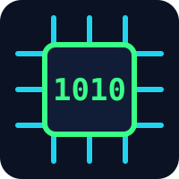

Learn the basics
Short lessons on binary, place values, octal and hexadecimal, with worked examples and reference tables.
ITEC 101 · Introduction to IT Computing
Learn binary, octal and hexadecimal, convert numbers with interactive bit switches, and test yourself with a practice quiz. Everything is built with only HTML and CSS.

Short lessons on binary, place values, octal and hexadecimal, with worked examples and reference tables.
Flip 8 bit switches and choose to compute decimal, octal or hexadecimal. A virtual 8-bit register lights up as you go.
Answer five quick questions. Each one gives instant feedback and a running score.
Register with your name and email, then sign in.
Read the Learn page to see how binary maps to other number systems.
Use the converter, then take the quiz to see how much you remember.
Electronic circuits are most reliable with two states, on and off. Binary uses exactly two digits, 0 and 1, so it matches the hardware.
A bit is a single binary digit. A byte is a group of 8 bits and can hold 256 different values.
They are shorter ways to write long binary numbers. One octal digit equals 3 bits and one hex digit equals 4 bits.
Each bit is a hidden checkbox. CSS counters add the weight of every checked box, and the result is displayed with counter().
Create your free account and open the converter in under a minute.
Create Account